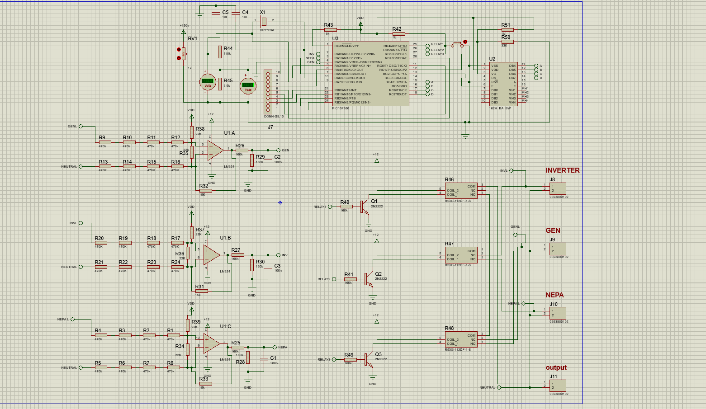
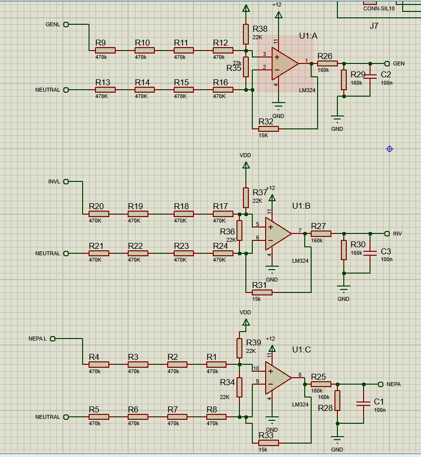
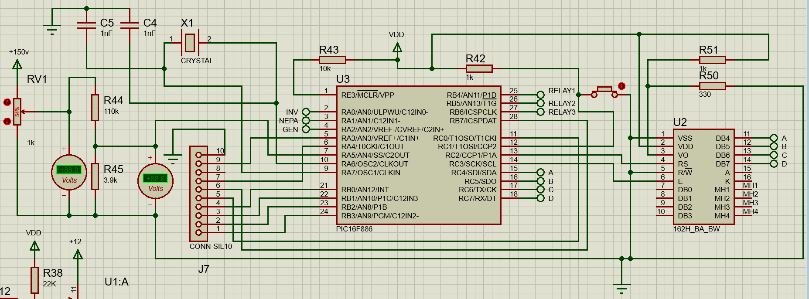
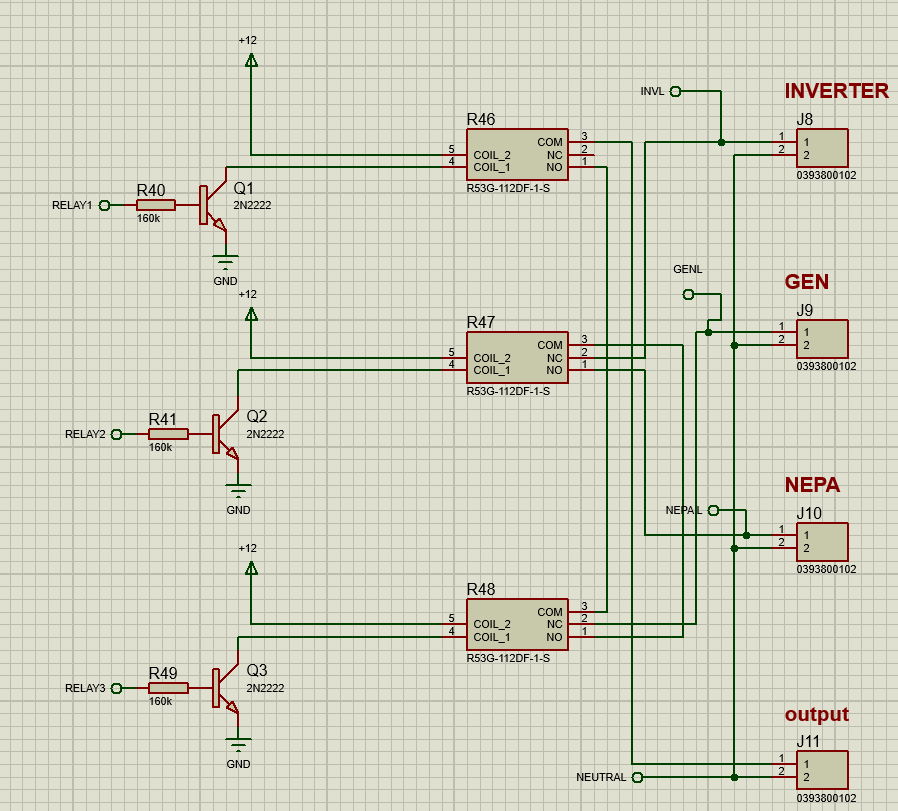
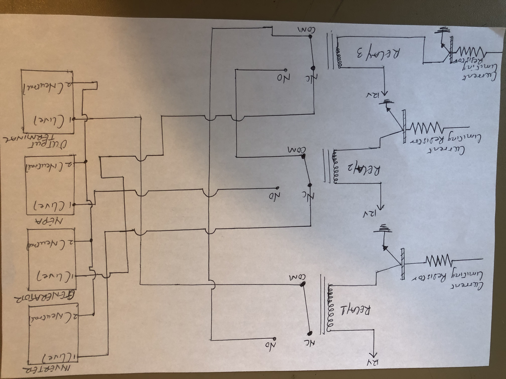
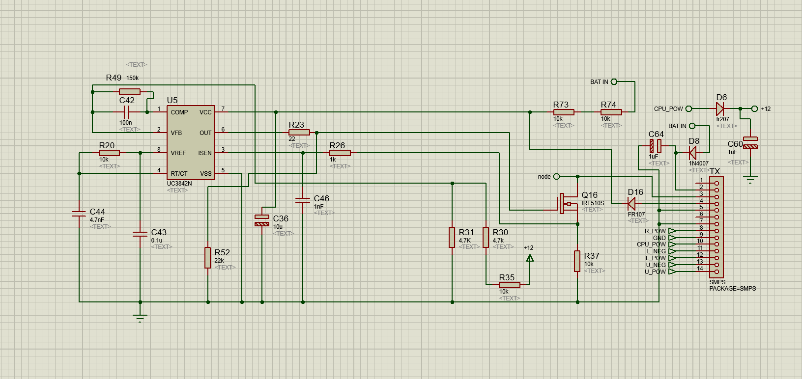
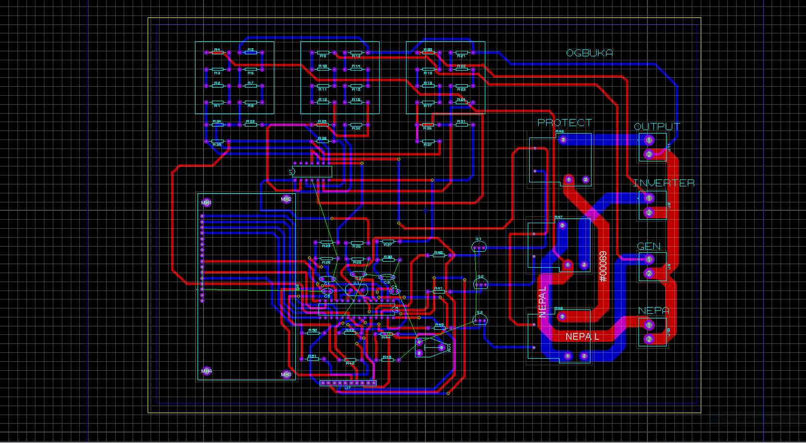
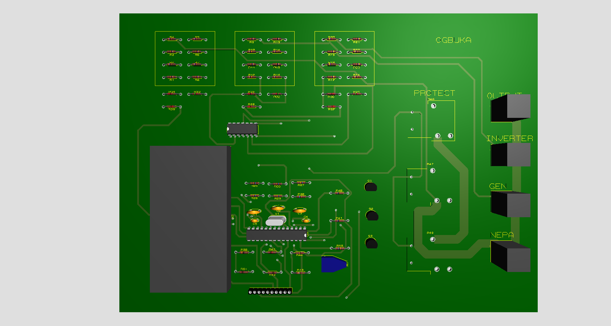

A.C voltage sensing design was achieved using difference amplifier method due to its cost effectiveness and voltage level (220 volts). This subcircuit was implemented to ideally deliver a 5v analog signal to the microcontroller for further signal conversion, processing and control.

PIC 16F886 microcontroller was used to implemenet the control algorithm for the system. This microcontroller features a built-in 10-bit ADC with eight input channels and supply voltage range of 2v - 5.5v

This subsystem implements a smart relay logic that prevents jamming of the AC sources by ensuring that at default state or non energized state of the three relays, only one supply (GEN) is connected to the normally open terminal of the output relay (R46)

From the above pen sketch, notice that the Generator AC supply connects through the normally closed terminal of the third relay to the normally open terminal of the first/output relay. However, the inverter and nepa supply has no link to the output relay, thereby allowing only the GEN supply connection at default/non energized state of the relays. This connection will prevent jamming and will also help in isolating distinct AC supply problems

SMPS is implemented to supply a continuous fixed voltage output (12v) to the subciruits including the difference amplifier and the relay terminals.

Components were arranged and connected to fit in an aesthetic manner while using a larger trace style (T200) for source connections to the relays.

3D view automatically generated